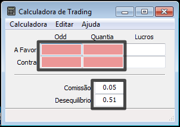
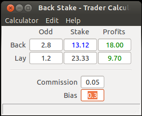

How to Use the Calculator¶
The calculator has a total of six editable text boxes, where four can be used to input values (odds and stakes) and the other two to insert parameters (commission and bias).
The keyboard configuration implemented (see Navigation and Clearing the Text boxes), allows the user to efficiently insert values with a desktop keyboard by placing his two hands in the following way: the left hand can be placed on the left side with the index finger on the TAB key and the thumb alternating between the SPACE and SHIFT keys; the right hand can be used to press the numeric pad and arrows.
Inserting Values¶
Values can be inserted like a Python [1] float represented in a string that will be parsed by the built-in function float [2]:
- ”.03”
- “2.4”
- “-2”
If there is any error with the input, the calculator is robust enough and will change the background colour to red and cancel the output of results.
The insertion of values can be further improved by using the arrow keys UP and DOWN to add/subtract 0.01 to the current value.
| [1] | http://python.org |
| [2] | http://docs.python.org/2/library/functions.html#float |
Clearing the Text boxes¶
In case of mistake, or any other reason, the value in the text box can be corrected by either using the BACKSPACE key with the arrows LEFT and RIGHT or by erasing the entire value with the SPACE key.
In most cases, the last approach is preferred since the user will be using two hands: the left hand to press SPACE and the right hand in the numeric pad to introduce the new value.
In case of apocalypse, or just because the context has changed, the user can always rely on CTRL+K to return to the beginning by cleaning all the text boxes.
Getting Results¶
The application tries to automatically calculate the needed results every time a new character is introduced in any of the editable text boxes.

Its important to notice that once the user fills three text boxes, he is implicitly indicating that he wants to find value of the fourth text box. This means that the last box is the unknown variable and that it is no longer editable.
In order to change the unknown variable the CTRL+U keys can be pressed when the wanted variable is focused. Another way to change the unknown variable is by resetting the calculator (see Clearing the Text boxes).
Introducing Bias¶
Bias between the profits can be setted in the interval [-1, 1].
